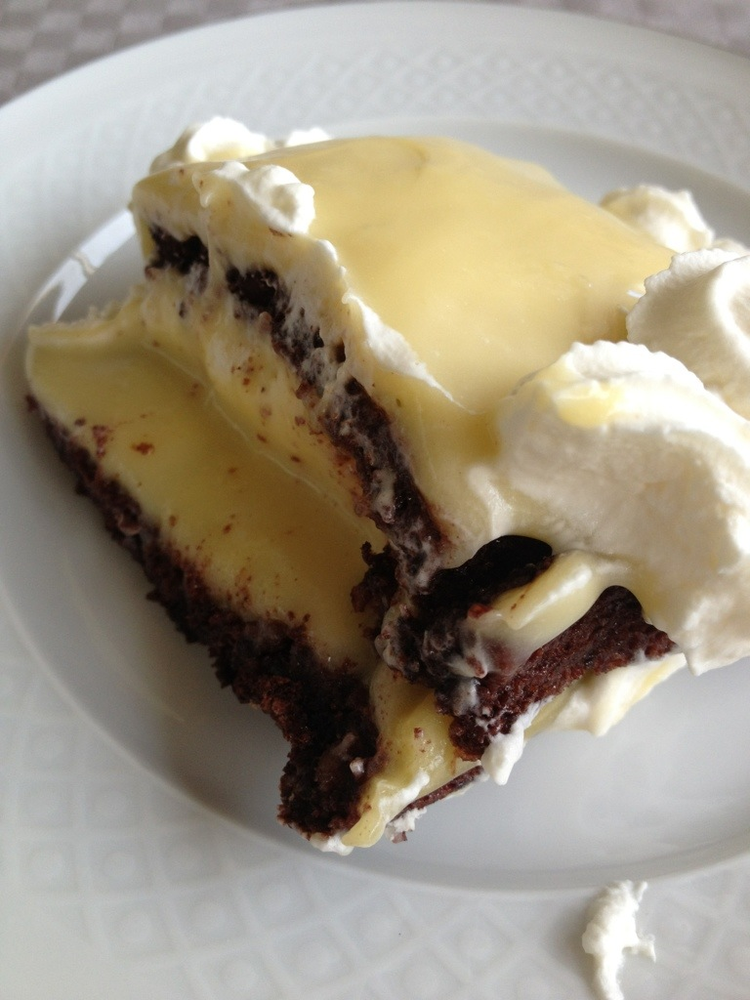
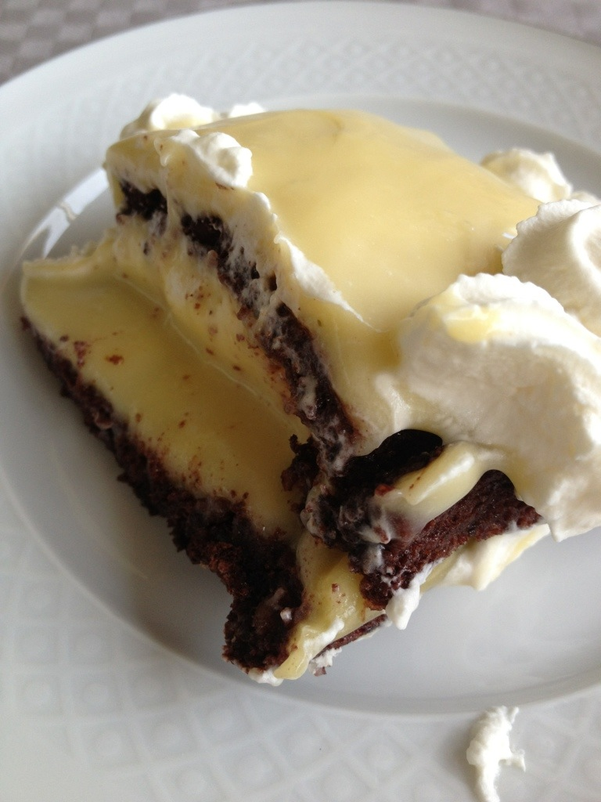

Vispa äggvitorna hårt. Vänd ner dem i blandningen av socker, hackade hasselnötter och kakao. Smörj två plåtar och pudra dem med mjöl, eller ta bakplåtspapper. Rita upp två tallriksstora cirklar – en på varje plåt – och bred ut smeten ca 1 cm tjock.
Grädda bottnarna i 150 grader, som sänks mot slutet av gräddningen. Tiden är 30-35 minuter, tills marängen är hård. Lossa bottnarna medan de är varma och låt dem kallna.
… och krämen:
Låt gulorna, sockret och grädden sjuda sakta tills det tjocknar i en kastrull. Vispa väl hela tiden. Låt svalna, rör sedan i smöret lite i taget.
Lägg samman bottnarna med smörkräm mellan och över. Gör mönster med en gaffel och strö rostade hasselnötter eller rostade mandelflisor över.
 
